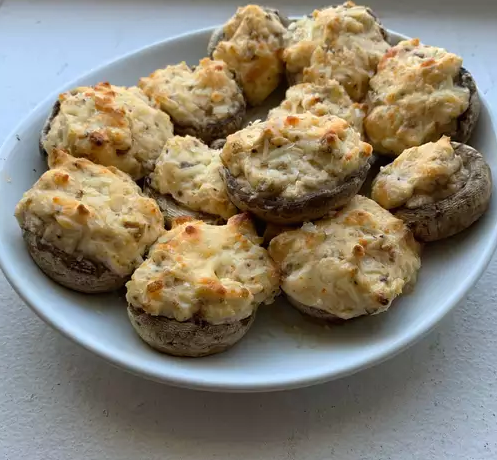

Stuffed Mushrooms

Description
These delicious stuffed mushrooms are pretty easy to make and taste just like the ones you'd get in a restaurant!
Ingredients
- 12 whole fresh mushrooms
- 1 tablespoon vegetable oil
- 1 tablespoon minced garlic
- 1 (8 ounce) package cream cheese, softened
- ¼ cup grated Parmesan cheese
- ¼ teaspoon ground black pepper
- ¼ teaspoon onion powder
- ¼ teaspoon ground cayenne pepper
Steps
- Preheat the oven to 350 degrees F (175 degrees C). Spray a baking sheet with cooking spray. Clean mushrooms with a damp paper towel; carefully break off stems. Chop stems extremely fine, discarding the tough end of stems.
- Heat oil in a large skillet over medium heat. Add garlic and chopped mushroom stems; fry until any moisture has evaporated, taking care not to burn garlic. Set aside to cool.
- Stir in cream cheese, Parmesan cheese, black pepper, onion powder, and cayenne. The mixture will be very thick; use a teaspoon to fill each mushroom cap with a generous amount of stuffing. Arrange mushroom caps on the prepared cookie sheet.
- Bake in the preheated oven until the mushrooms are piping hot, about 20 minutes.
Return to Homepage